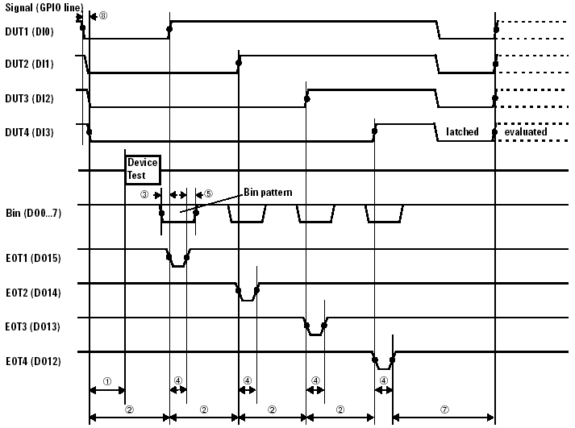

Timing diagram (Multitest quad-site)

The timing is defined by the configuration file parameters given in the table below (values are in milliseconds):
|
Configuration parameters |
|
Default file |
Debug file |
|---|---|---|---|---|
1 |
device_test_delay_time |
(min.) |
0 |
0 |
2 |
end_of_test_delay_time |
(min.) |
0 |
0 |
3 |
bin_data_setup_time |
(min.) |
2 |
200 |
4 |
end_of_test_pulse_width |
(min.) |
3 |
300 |
5 |
bin_data_hold_time |
(min.) |
2 |
200 |
6 |
serial_bin_interval |
(min.) |
15 |
1000 |
7 |
test_start_relax_time |
(max.) |
20 |
20 |
8 |
maximum_multi_site_latency |
(max.) |
100 |
1000 |